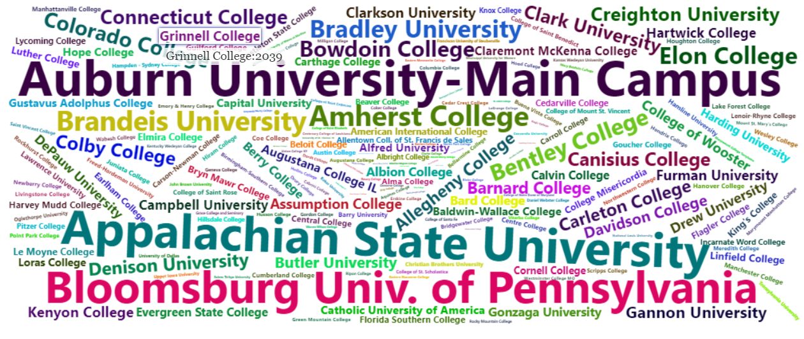

College Explorer

Project Description
The goal of this project was to locate differences between private and public colleges through quantitative data. The dataset used came from kaggle from 2019 containing information 777 colleges in the US. Key questions the app sought to answer were what are the affects of enrollment and acceptance rates between private and public colleges and are there any correlations between variables that might affect student enrollment.
Through this project I found differences in the amount of alumni that contribute back to their college between private and public colleges. With private colleges there is a higher percentage and as such there are other correlations that could influence the amount of alumni donations. Looking at graduation rates while comparing alumni donation percentages we can see that private colleges with higher graduation rates have a larger range of donation rates. This is very different when looking at public colleges. As they tend to have a consistent rate of alumni donations with correlation to graduation rates. It's interesting to notice that private colleges have an implied line where all or most data points are found below indicating colleges with low gradiation rate will have lower alumni contribution rates.
Some improvements that could be made for the future include using updateSliderInput to display slider ranges for each variable for the word cloud. There was a conflict between outputting the word cloud and updating the slider input that couldn't be resolved so ultimately it made the overall experience more difficult to understand while using the interactable word cloud settings.
Refrences
https://www.kaggle.com/datasets/yashgpt/us-college-data?resource=download